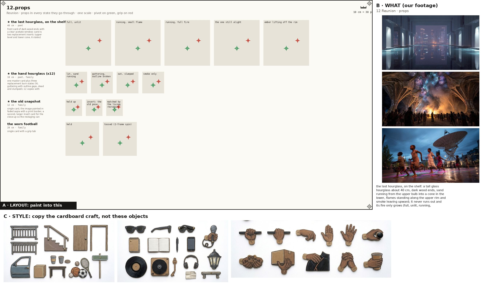
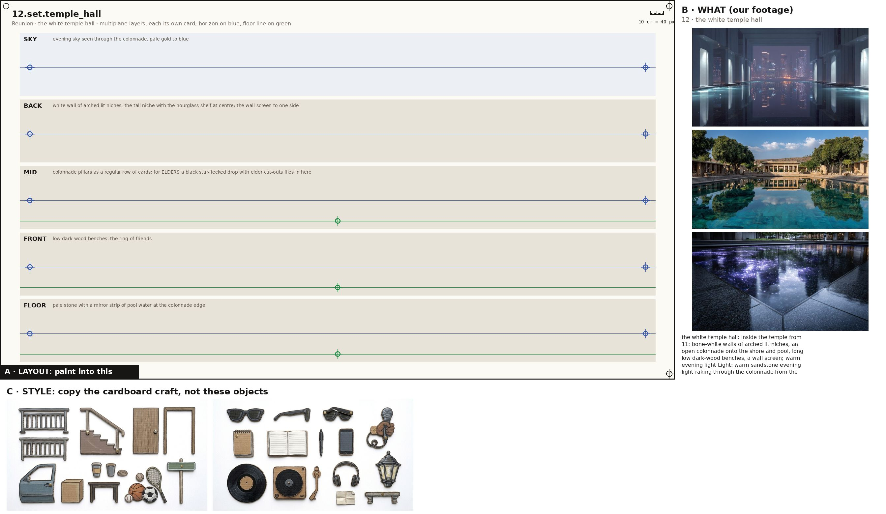
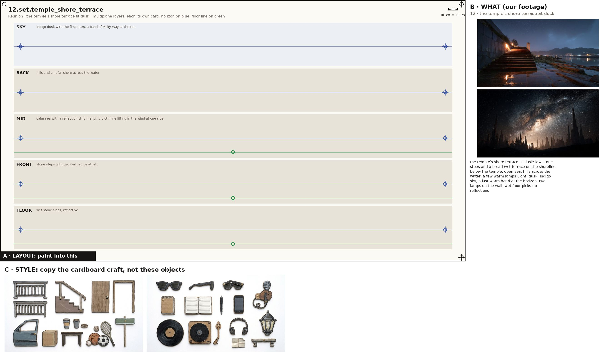
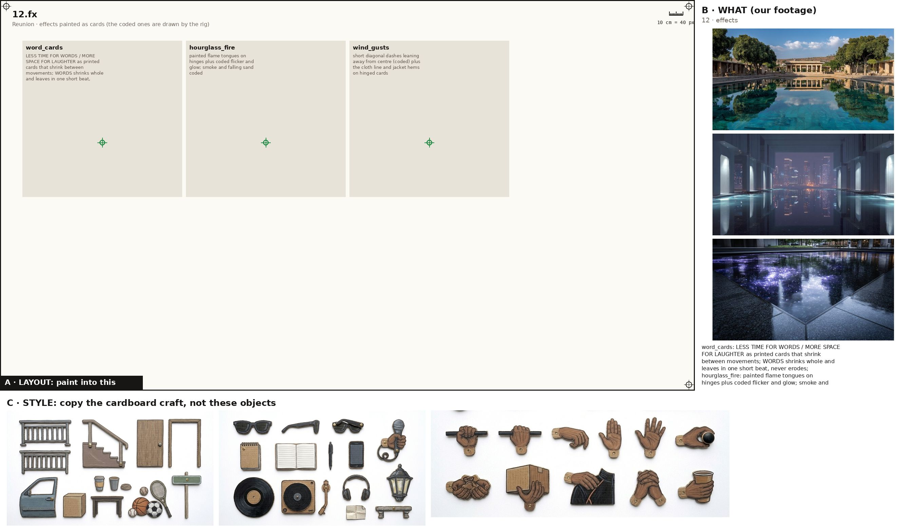

One image + one prompt each. The characters' action sheets are in the cast above; their costume kits are on the character kits page.

Props, every state props
Paint one sheet of cut-out puppet parts for a paper-puppet film, using the attached image. Panel A is the exact layout, panel B is our footage for these props (reference: copy the object, not the photo style), panel C is the style. STYLE (panel C): flat cards cut from corrugated cardboard, gouache with confident ink linework, the flutes faintly showing through the paint, a thin raw kraft-brown cut edge round every card, brass split-pin brads; shot flat-on, even light, no shadows, no perspective. Copy the craft from C, not the clothes in it. WHAT (panel B): the props of the poem 'Reunion', one row each, every state of a prop in its own cell, left to right: the last hourglass, on the shelf: a tall glass hourglass about 40 cm, dark wood ends, sand running from the upper bulb into a cone in the lower, flames standing along the upper rim and smoke leaving upward; it never runs out and its fire only grows (full, unlit, running, small flame, running, full fire, the one still alight, ember lifting off the rim); the hand hourglass (x12): hand-sized hourglass, 18 cm, dark wood ends, the glass smouldering with a small flame at the neck; as it burns out it slumps and its outline goes out run by run (lit, sand running, guttering, outline broken, out, slumped, smoke only); the old snapshot: a faded square snapshot with a white border: the brothers decades younger, mid-run, one holding a football (held up, insert: the old pose, matched by the living restaging); the worn football: worn brown leather American football, white laces (held, tossed (2-frame spin)); the wall screen: large flat black-framed screen on the white wall showing a football game in green and white (game on, goal flash); the phone: black smartphone held up landscape (raised, flash); the white niche shelf: an arched lit niche in the white temple wall with a floating shelf (lit). Paint each state as a flat cardboard prop card at the size its cell gives, the same object across its row; a brass brad on the green cross (its pivot); where there is a red cross, that is where a hand grips it. LAYOUT (panel A): paint one card inside each grey ghost, in the same place, size and angle, inside its dashed outline; a brass brad exactly on every green cross; each red cross must fall inside that card's rounded end. NEVER draw a pelvis, hip, shorts or briefs card (the thighs end in a rounded seat that tucks under the hem), a sleeveless vest, lace-up boots, or sunglasses painted onto a head. OUTPUT: only the painted cards on a pure white 2048x1152 sheet laid out as panel A. Leave out panels B and C, the crosses, labels, ruler, dashed lines and ghosts.

the white temple hall set
Paint one sheet of cut-out puppet parts for a paper-puppet film, using the attached image. Panel A is the exact layout, panel B is our footage for this place (reference: copy the place, not the photo style), panel C is the style. STYLE (panel C): flat cards cut from corrugated cardboard, gouache with confident ink linework, the flutes faintly showing through the paint, a thin raw kraft-brown cut edge round every card, brass split-pin brads; shot flat-on, even light, no shadows, no perspective. Copy the craft from C, not the clothes in it. WHAT (panel B): the white temple hall: inside the temple from 11: bone-white walls of arched lit niches, an open colonnade onto the shore and pool, long low dark-wood benches, a wall screen; warm evening light Light: warm sandstone evening light raking through the colonnade from the left; niches self-lit; for ELDERS the whole hall goes to black and drains back from the top. SHEET: the place as five separate flat cardboard layers, one per band, painted to stack front to back in a multiplane rig: SKY: evening sky seen through the colonnade, pale gold to blue; BACK: white wall of arched lit niches; the tall niche with the hourglass shelf at centre; the wall screen to one side; MID: colonnade pillars as a regular row of cards; for ELDERS a black star-flecked drop with elder cut-outs flies in here; FRONT: low dark-wood benches, the ring of friends; FLOOR: pale stone with a mirror strip of pool water at the colonnade edge. Each layer is its own card with a clean cut top edge and transparent gaps where the layer behind shows through; keep the horizon on the blue line and the floor on the green line in every band so they register. LAYOUT (panel A): paint one card inside each grey ghost, in the same place, size and angle, inside its dashed outline; a brass brad exactly on every green cross; each red cross must fall inside that card's rounded end. OUTPUT: only the painted cards on a pure white 2048x1152 sheet laid out as panel A. Leave out panels B and C, the crosses, labels, ruler, dashed lines and ghosts.

the temple's shore terrace at dusk set
Paint one sheet of cut-out puppet parts for a paper-puppet film, using the attached image. Panel A is the exact layout, panel B is our footage for this place (reference: copy the place, not the photo style), panel C is the style. STYLE (panel C): flat cards cut from corrugated cardboard, gouache with confident ink linework, the flutes faintly showing through the paint, a thin raw kraft-brown cut edge round every card, brass split-pin brads; shot flat-on, even light, no shadows, no perspective. Copy the craft from C, not the clothes in it. WHAT (panel B): the temple's shore terrace at dusk: low stone steps and a broad wet terrace on the shoreline below the temple, open sea, hills across the water, a few warm lamps Light: dusk: indigo sky, a last warm band at the horizon, two lamps on the wall; wet floor picks up reflections. SHEET: the place as five separate flat cardboard layers, one per band, painted to stack front to back in a multiplane rig: SKY: indigo dusk with the first stars, a band of Milky Way at the top; BACK: hills and a lit far shore across the water; MID: calm sea with a reflection strip; hanging-cloth line lifting in the wind at one side; FRONT: stone steps with two wall lamps at left; FLOOR: wet stone slabs, reflective. Each layer is its own card with a clean cut top edge and transparent gaps where the layer behind shows through; keep the horizon on the blue line and the floor on the green line in every band so they register. LAYOUT (panel A): paint one card inside each grey ghost, in the same place, size and angle, inside its dashed outline; a brass brad exactly on every green cross; each red cross must fall inside that card's rounded end. OUTPUT: only the painted cards on a pure white 2048x1152 sheet laid out as panel A. Leave out panels B and C, the crosses, labels, ruler, dashed lines and ghosts.

Painted effects fx
Paint one sheet of cut-out puppet parts for a paper-puppet film, using the attached image. Panel A is the exact layout, panel B is our footage for the mood, panel C is the style. STYLE (panel C): flat cards cut from corrugated cardboard, gouache with confident ink linework, the flutes faintly showing through the paint, a thin raw kraft-brown cut edge round every card, brass split-pin brads; shot flat-on, even light, no shadows, no perspective. Copy the craft from C, not the clothes in it. WHAT: the poem's painted effects, one per cell, as flat cardboard cards that a cut-out film moves in front of the camera: word_cards: LESS TIME FOR WORDS / MORE SPACE FOR LAUGHTER as printed cards that shrink between movements; WORDS shrinks whole and leaves in one short beat, never erodes; hourglass_fire: painted flame tongues on hinges plus coded flicker and glow; smoke and falling sand coded; wind_gusts: short diagonal dashes leaning away from centre (coded) plus the cloth line and jacket hems on hinged cards. A brass brad on the green cross of each. LAYOUT (panel A): paint one card inside each grey ghost, in the same place, size and angle, inside its dashed outline; a brass brad exactly on every green cross; each red cross must fall inside that card's rounded end. NEVER draw a pelvis, hip, shorts or briefs card (the thighs end in a rounded seat that tucks under the hem), a sleeveless vest, lace-up boots, or sunglasses painted onto a head. OUTPUT: only the painted cards on a pure white 2048x1152 sheet laid out as panel A. Leave out panels B and C, the crosses, labels, ruler, dashed lines and ghosts.